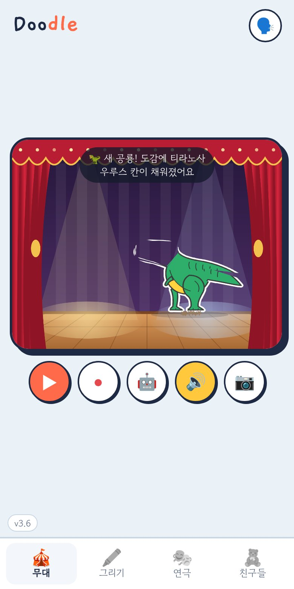
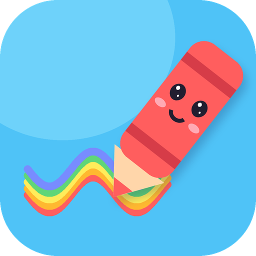
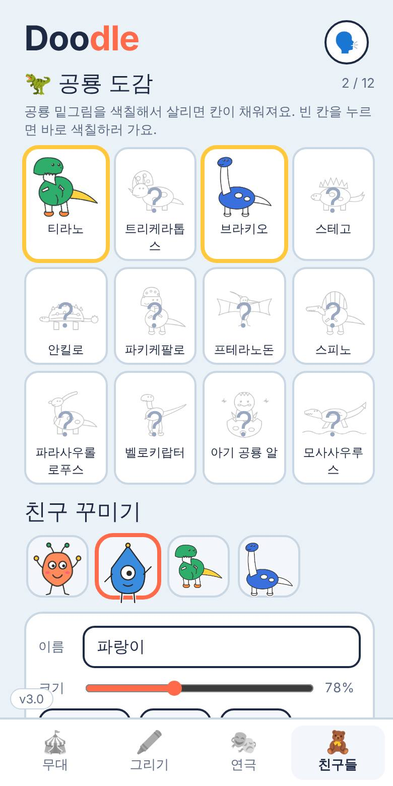
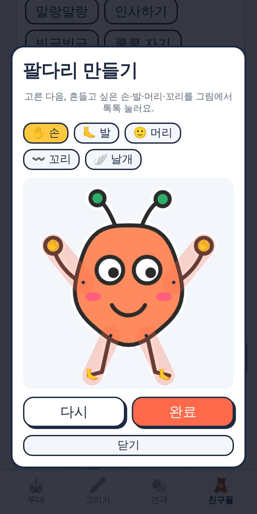
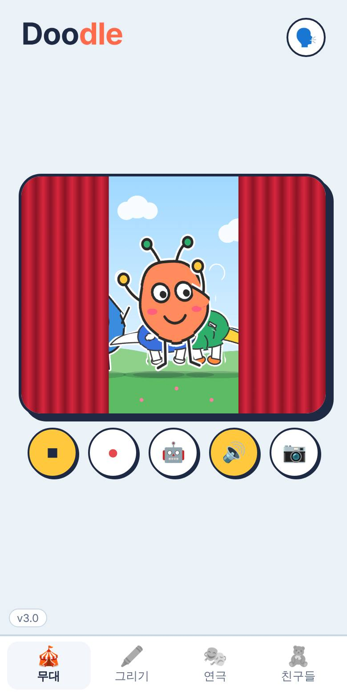
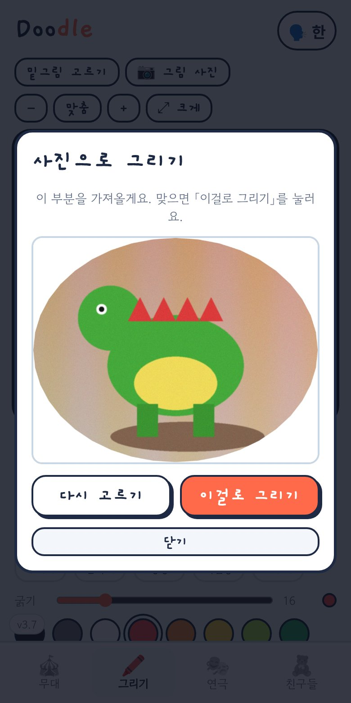
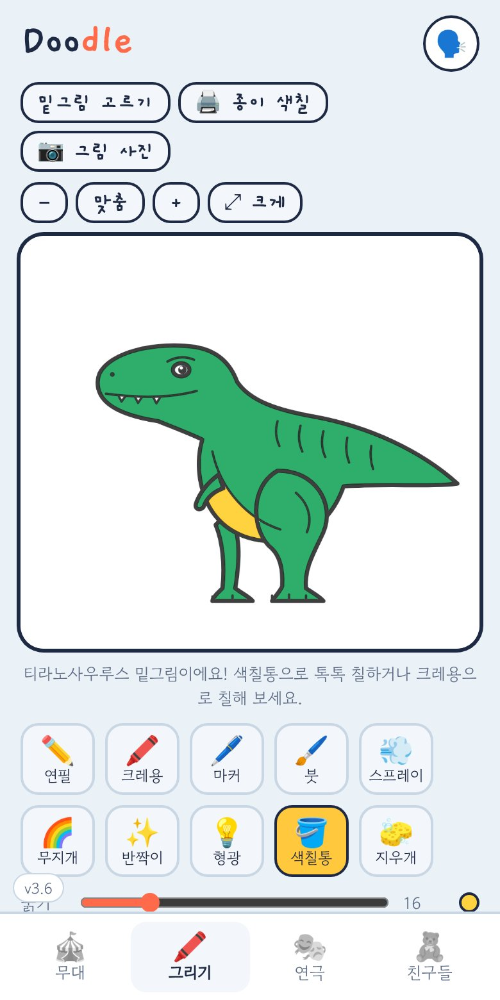

🦖 공룡이 공룡처럼
쿵쿵 걷고, 크앙 울고, 꼬리를 흔들어요. 공룡 밑그림으로 만들면 저절로 공룡 움직임이 나와요.

내 그림이 살아나요! 그리면 친구가 되어 무대에서 춤추고 연극해요.
 폰 카메라로 찍으면 바로 받아요
폰 카메라로 찍으면 바로 받아요소개
아이가 그린 그림이 진짜 친구처럼 움직여요. 어른 도움 없이도 누르기만 하면 돼요.

쿵쿵 걷고, 크앙 울고, 꼬리를 흔들어요. 공룡 밑그림으로 만들면 저절로 공룡 움직임이 나와요.

공룡 12종을 색칠해서 살릴 때마다 도감이 채워져요. 누르면 이름과 재미있는 사실을 소리 내어 읽어줘요.

손과 발을 톡톡 찍으면 그 부분이 따로 흔들려요. 공룡 밑그림은 머리·다리·꼬리가 처음부터 움직여요.
모래를 문질러 화석 발굴, 알을 색칠해 알 부화, 설명을 듣고 맞히는 누구일까?, 점선을 따라 그리는 따라 그리기. 그리기가 어려운 날에도 도감을 채워요.
연극을 그림책(PDF)으로 만들어 가족에게 보내요. 친구 이름을 내 목소리로 담고, 만든 그림은 날짜별 앨범에 모여요.
하루 놀이 시간을 정하면 1분 전에 알려주고, 시간이 되면 친구들이 "내일 또 놀자!" 하고 커튼을 닫아요.

장면마다 배경을 바꾸면 커튼이 닫혔다 열려요. 대사는 목소리로 읽고, 끝나면 한 편의 영상으로 저장돼요.

사진을 찍거나 앨범에서 고른 뒤, 원하는 곳만 손가락으로 빙 둘러요. 사진 모습 그대로 그리기 화면에 들어가서 그 위에 그리고 색칠할 수 있어요.

밑그림 28가지와 펜 10가지. 글을 몰라도 누르는 것마다 이름을 읽어줘서 혼자 할 수 있어요.
업데이트 내용
앱을 켤 때 새 버전이 있으면 알려줘요. 업데이트해도 만든 친구들은 그대로 남아요.
설치 방법
⚠️ Play 스토어가 아닌 곳에서 받은 앱이라 한 번 허용이 필요해요. 설치가 끝나면 허용을 다시 꺼도 괜찮아요. 아이폰은 아래 방법으로 써요.
아이폰 · 아이패드
설치 파일 없이 사파리에서 열어 홈 화면에 붙이면 앱처럼 아이콘으로 켜져요. 새 버전도 저절로 바뀌어요.
사진·영상 저장은 공유 창에서 이미지 저장(또는 비디오 저장)을 누르면 사진첩에 들어가요. 카메라·마이크는 처음 쓸 때 사파리가 한 번 물어봐요. 만든 친구는 그 아이폰 안에만 저장돼요.
안전 정보
| 항목 | 내용 | 상태 |
|---|---|---|
| 개인정보 | 그림, 녹음, 친구 상자는 모두 폰 안에만 저장돼요. 어디에도 보내지 않아요. | 안전 |
| 인터넷 | 새 버전이 있는지 확인할 때만 GitHub에 버전 번호를 물어봐요. | 최소 |
| 권한 | 마이크(내 목소리 녹음할 때만). 사진은 폰 카메라 앱으로 찍어서 가져와요. 그 외 권한은 쓰지 않아요. | 최소 |
| 광고·결제 | 없어요. | 없음 |
| 점검 | 올리기 전에 외부 전송·위험 코드가 없는지 매번 확인해요. 코드는 이 저장소에 모두 공개돼 있어요. | 공개 |
자주 묻는 질문
앱을 켰을 때 "새 버전이 나왔어요!" 창이 뜨면 업데이트를 누르세요. 새 파일을 받아 열고 설치하면 돼요. 이 페이지에서 다시 받아 설치해도 같아요.
아니요. 친구 상자에 보관된 친구는 그대로 남아요. 앱을 지웠다가 다시 깔면 사라져요.
폰 무음 모드를 꺼 주세요. 그래도 안 나오면 설정 → 일반 → 텍스트 음성 변환(TTS)에서 한국어가 켜져 있는지 확인해 주세요.
흰 종이에 진한 색으로 그리고, 밝은 곳에서 그림만 화면에 꽉 차게 찍으면 깔끔하게 오려져요.